<!DOCTYPE html>
<html lang="ml">
<head>
  <meta charset="utf-8">
  <meta name="viewport" content="width=device-width, initial-scale=1.0">
  <title>Pages 1-20 - Class 9 Social science 2</title>
  <style>

:root {
  --bg-color: #fcfcfd;
  --card-bg: #ffffff;
  --text-color: #1e293b;
  --text-muted: #64748b;
  --primary-color: #0284c7;
  --primary-light: #e0f2fe;
  --border-color: #e2e8f0;
  --radius: 10px;
  --shadow: 0 4px 6px -1px rgb(0 0 0 / 0.05), 0 2px 4px -2px rgb(0 0 0 / 0.05);
}

body {
  font-family: -apple-system, BlinkMacSystemFont, "Segoe UI", Roboto, "Noto Sans Malayalam", "Manjari", "Gayathri", sans-serif;
  background-color: var(--bg-color);
  color: var(--text-color);
  line-height: 1.8;
  font-size: 1.1rem;
  margin: 0;
  padding: 0;
}

.container {
  max-width: 860px;
  margin: 0 auto;
  padding: 2.5rem 1.5rem 5rem 1.5rem;
}

header {
  margin-bottom: 2.5rem;
  padding-bottom: 1.5rem;
  border-bottom: 2px solid var(--border-color);
}

.badge-row {
  display: flex;
  gap: 0.5rem;
  margin-bottom: 0.75rem;
  flex-wrap: wrap;
}

.badge {
  display: inline-block;
  font-size: 0.75rem;
  font-weight: 700;
  text-transform: uppercase;
  letter-spacing: 0.05em;
  padding: 0.25rem 0.65rem;
  border-radius: 9999px;
  background: var(--primary-light);
  color: var(--primary-color);
}

.badge-medium {
  background: #fef3c7;
  color: #b45309;
}

.badge-class {
  background: #dcfce7;
  color: #15803d;
}

h1 {
  font-size: 2.1rem;
  font-weight: 800;
  margin: 0.5rem 0 1rem 0;
  line-height: 1.3;
  color: #0f172a;
}

.nav-bar {
  display: flex;
  justify-content: space-between;
  margin: 1.5rem 0;
  font-size: 0.95rem;
  flex-wrap: wrap;
  gap: 0.5rem;
}

.nav-bar a {
  color: var(--primary-color);
  text-decoration: none;
  font-weight: 600;
  padding: 0.5rem 1rem;
  border-radius: var(--radius);
  background: var(--card-bg);
  border: 1px solid var(--border-color);
  transition: all 0.2s ease;
}

.nav-bar a:hover {
  background: var(--primary-light);
  border-color: var(--primary-color);
}

.nav-bar .disabled {
  color: var(--text-muted);
  pointer-events: none;
  border-color: transparent;
  background: transparent;
}

.page-section {
  background: var(--card-bg);
  border: 1px solid var(--border-color);
  border-radius: var(--radius);
  box-shadow: var(--shadow);
  padding: 2rem;
  margin-bottom: 2.5rem;
}

.page-header {
  display: flex;
  align-items: center;
  justify-content: space-between;
  margin-bottom: 1.25rem;
  padding-bottom: 0.5rem;
  border-bottom: 1px dashed var(--border-color);
}

.page-number {
  font-size: 0.8rem;
  font-weight: 700;
  text-transform: uppercase;
  color: var(--text-muted);
  letter-spacing: 0.05em;
}

.page-content p {
  margin: 0 0 1.25rem 0;
  white-space: pre-wrap;
  word-break: break-word;
}

.page-content p:last-child {
  margin-bottom: 0;
}

.diagram-card {
  margin: 2rem 0;
  text-align: center;
  background: #f8fafc;
  border: 1px solid var(--border-color);
  border-radius: var(--radius);
  padding: 1rem;
  overflow: hidden;
}

.diagram-card img {
  max-width: 100%;
  height: auto;
  border-radius: calc(var(--radius) - 4px);
  display: inline-block;
  box-shadow: 0 2px 4px rgba(0,0,0,0.04);
}

.diagram-card figcaption {
  font-size: 0.85rem;
  color: var(--text-muted);
  margin-top: 0.75rem;
  font-weight: 500;
}

footer {
  margin-top: 3rem;
  padding-top: 2rem;
  border-top: 2px solid var(--border-color);
}

  </style>
</head>
<body>
  <div class="container">
    <header>
      <div class="badge-row">
        <span class="badge badge-class">Class 9</span>
        <span class="badge badge-medium">Malayalam Medium</span>
        <span class="badge">Social science 2</span>
        <span class="badge">Part 1</span>
      </div>
      <h1>Pages 1-20</h1>
      <div class="nav-bar"><span class="nav-bar disabled"></span><a href="index.html">☰ Index</a><a href="part_1_pages_2140.html">Pages 21-40 →</a></div>
    </header>
    <main>
<section class="page-section" id="page-1">
  <div class="page-header"><span class="page-number">Page 1</span></div>
  <figure class="diagram-card" id="fig_ch01_p001_01"><figcaption>Figure fig_ch01_p001_01 (Page 1)</figcaption></figure>
  <div class="page-content">
    <p>–šŒž—Dz”šȼc--<br>‹šuc<br>ǢšÄ¢Å§IX<br>¢sŽ‘–ÅښÅ<br>¡ˆš‚“›„DZš‹DZš–“sƀ§<br>‚ƮššÚ›‚§<br>–cǚš†“›„Dzš‹Dzš–u¢“•ˆŽ›”œ†–Œ›‚›(SCERT)¢sŽ‘c<br>2024<br>ST-205-1-SOC.SCI-II (M)-9-VOL-1</p>
  </div>
</section>
<section class="page-section" id="page-2">
  <div class="page-header"><span class="page-number">Page 2</span></div>
  <figure class="diagram-card" id="fig_ch01_p002_01"><figcaption>Figure fig_ch01_p002_01 (Page 2)</figcaption></figure>
  <div class="page-content">
    <p>Prepared by<br>State Council of Educational  Research and Training (SCERT)<br>Poojappura, Thiruvananthapuram 695012, Kerala<br>Website  :  www.scertkerala.gov.in, e-mail  :  scertkerala@gmail.com<br>First Edition : 2024<br>Typeset and Layout :  SCERT<br>Printed at : KBPS, Kakkanad, Kochi-30<br>© Department of General Education, Government of Kerala<br>–šŒž—DZ”šȻc--<br>¢„”œuš†c<br>z†uŒ†e…›†šsz¢—<br>‹šŽ‚‹šuDZ“›…š‚š<br>ˆĕšŠ–›ŰuzšĹŒš~š<br>ŝš“›i‚§ÚŠcuš<br>“›ŰDZ—›ŒšxŒ†šucuš<br>iĄz…›‚Žcuš<br>‚“”‹†š¢Œzš¢u<br>‚“”‹f”›•Œš¢u<br>uš¢—‚“zušƒš<br>z†uŒcu„šsz¢—<br>‹šŽ‚‹šuDZ“›…š‚š<br>z¢—z¢—z¢—<br>zzzz¢—<br>gŦDZ m¡ź ŽšzDZŒš§ mƼš gŦDZښŽc m¡ź<br>–¢—š„Žœ–¢—š„ŽŶšŽš§<br>|šÄm¡źŽšzDZ¡Ĺ ¢Ǜ—›Úų–ƠžÅĴ“c<br>£““›…DZˆžÅĴ“Œš<br>e‚›¡ź<br>ˆšŽƠŽDZśÆ<br>|šÄe‹›Œš†c¡sšǫų<br>|šÄ m¡ź Œš‚šˆ›‚šÚ¡‘c uŽÚŶš¡Žc<br>Œ‚›Åų“¡ŽcŠ—Œš†›Úc<br>|šÄm¡źŽšzDZś¡źcm¡ź†šĞsšŽ¡}c<br>¢äŒĹ›†co”ǴŽDZś†c¢“Ĭ›Ƃŀ›Úc<br>Ƃ‚›č<br>9</p>
  </div>
</section>
<section class="page-section" id="page-3">
  <div class="page-header"><span class="page-number">Page 3</span></div>
  <figure class="diagram-card" id="fig_ch01_p003_01"><figcaption>Figure fig_ch01_p003_01 (Page 3)</figcaption></figure>
  <figure class="diagram-card" id="fig_ch01_p003_02"><figcaption>Figure fig_ch01_p003_02 (Page 3)</figcaption></figure>
  <div class="page-content">
    <p>Ƃ›¡ƀĞ“›„DZšÅƒ›s¢‘<br>ˆŽ›•§sŽ›ă –šŒž—DZ”šȻcII ˆš~ˆǘsc †›āÇڝŒÄˆ›Æ e“‚Ž›<br>ƀ›Úsš§ ‹žŒ›”šȻ“c –šƠśs”šȻ“Œš§ g‚›¡ iǫ}Úc<br>£““›…DZŒšÅų ¢šsś¡ q¢Žš Ƃ¢„”Ĺ›¡źc Ƃš¢„”›s ‹žŒ›”šȻ<br>–“›¢”•‚sÇÚ§e†ǔ‚Œšš§e‚š‚›}ā‘›¡z†zœ“›‚cŽžˆ¡ƀ}<br>ų‚§q¢ŽšƂ¢„”Ĺ›¡źc‚†‚§‹žŒ›”šȻ–“›¢”•‚s‘cz†zœ“›‚“c<br>“›”„Œš› Ƃ‚›ˆš„›Úų ‹žŒ›”šȻś¡ Ƃš¢„”›s–Œœˆ†c (Regional <br>Approach in Geography) mųŽœ‚›š§gŦDZ¡}‹žŒ›”šȻc“›”„œsŽ›Ú“š<br>†š›hˆš~ˆǘsŽx†›Æ–ǴœsŽ›ă›Ğǫ‚§¢šsś¡źn‚‹šuŝc<br>zœ“›‚c¡sĞ›ƀ}¢ÚĬ–š—xŽDZśÆe“›}¡ĹˆŽ›Ǚ›‚›¢š}›ā›<br>zœ“›Úų‚›†§gŎśǫˆ~†c†›ā¡‘–—š›Úc‹žŒ››ÆiŎ<br>“š„›‚Ǵ¢Šš…Œǫ“DZޛs‘š›zœ“›Úų‚›†§”šȻœŒš‹žŒ›”šȻˆ~†c<br>f“”DZŒš§mų…šŽiĬšÚų‚›†§hˆš~ˆǘsc†›ā¡‘Ƃšž<br>ŽšÚc<br>pŽ –šŒž—DZzœ“›¡ų †››Æ Œ†•DZ†§ –Œž—Ĺ›Æ zœ“›Úų‚›†š“<br>”DZŒš…†–ŒšÅz†Ĺ›¡źc“›†›ŒĹ›¡źc†š†š“›…Ĺ›ǫ–š…DZ<br>‚sÇsž}›sĞ›sÇe›ce‚›†š›Œ†•DZŒž…†ŽžˆœsŽ¡Ĺڝ<br>›ăce‚§¢†Ž›}ų¡“Ƽ“›‘›s¡‘ڝ›ăc–šƠśs”šȻcŒ¢ųšĞ¡“<br>Ʃų†›Žœäā‘chˆš~ˆǘsśÆiÇ¡ƀ}Ĺ››ĞĬ§<br>–Ơ„§v}†¢ce‚›¡źe}›Ǚš†¢Œts¢‘cŒ†Ǡ›šÚ›¡ÚšĬ§<br>iƈš„†Ĺ›¡źc iˆ¢‹šuś¡źc –š…DZ‚s¡‘ ‚›Ž›ă›ų‚›†ǫ<br>e“–Žchˆš~ˆǘsśž¡}†›āÇÚ§‹DZŒšsų<br>Œ†•DZ¡ź –šŒž—›s“c –šcǗšŽ›s“Œš “‘Å㍛Æ ‹žŒ›”šȻś<br>¡źc<br>–šƠśs”šȻś¡źc<br>ˆÿ§<br>iǡښĬ¡sšĬ§<br>ˆ‚›<br>¢šs¡Ĺ “Ž¢“ÆښÄ s’›ų ‚ŽĹ›š§ pƠ‚šcãšǠ›¡ –šŒž—DZ<br>”šȻcIIˆš~ˆǘscx›Ğ¡ƀ}Ĺ››Ğǫ‚§hˆš~ˆǘs¡Ĺ–ǴœsŽ›Ús<br>e›“s‘¡}¢šsc“›”šŒšÚs<br>f”c–s¢‘š¡}<br>¢šzƂsš”§fÅ¡s<br>ÜÅ<br>m–§–›gfÅ}›¢sŽ‘</p>
  </div>
</section>
<section class="page-section" id="page-4">
  <div class="page-header"><span class="page-number">Page 4</span></div>
  <figure class="diagram-card" id="fig_ch01_p004_01"><figcaption>Figure fig_ch01_p004_01 (Page 4)</figcaption></figure>
  <figure class="diagram-card" id="fig_ch01_p004_02"><figcaption>Figure fig_ch01_p004_02 (Page 4)</figcaption></figure>
  <div class="page-content">
    <p>ˆš~ˆǘsŽx†š–Œ›‚›<br>e£ǵ–Å<br>¢š¡smÄu¢”§<br>¡xÅ¢ˆ’§–âsŽ‘s­Ã–›Æ¢‰šÅ—›¢ǡš›ÚƏ›–Åă§<br>¡xÅ¢ˆ’§–Ã<br>¢š£•z¢ŒšÄ–›m–§<br>e¢–š–›¢Ǯ§¡Ƃš‰–Å<br>¡—§›ƀšÅЧ¡Œź§q‰§—DZŒš†›Ǯœ–§
<br>gŦDZÄgÄǡ›ǮDZžĞ§q‰§¢ǜ–§–Ä–§<br>¡}s§¢†š‘z›<br>“›Œ‚›Ž“†ŦˆŽc<br>“›„u§…Å<br>ecuāÇ<br>Njœ¢•§}›<br>e–›ǡź§¡Ƃš‰–Å<br>›ƀšÅЧ¡Œź§q‰§<br>¢zDZš÷‰›
u“¢sš¢‘z§†›ƠžÅ<br>e†›sŒšŽ›fÅ<br>e–›ǡź§¡Ƃš‰–Å<br>›ƀšÅЧ¡Œź§q‰§gÚ¢šŒ›s§–§
<br>m–§mÄ¢sš¢‘z§“Åڐ<br>“›zsŒšÅ–›fÅ<br>Ƃ›Ä–›ƀÆu“mă§m–§m–§<br>Œ›ĶŒ‚›Ž“†ŦˆŽc<br>•šÄšÆmŠ›<br>mă§m–§m–§}›¢zDZš÷‰›<br>z›mă§m–§m–§ˆœŽ¢Œ}§g}Ú›<br>¢šŒęm–§<br>mă§m–§}›¢–š•DZÆ–Ä–§<br>z›mă§m–§m–§¢sšĞכÆ  <br>‚›Ž“†ŦˆŽc<br>Š›ŭm–§fÅ<br>mă§m–§m–§}›gÚ¢šŒ›s§–§<br>m–§mc“›u“¢ŒšÆmă§m–§m–§<br>‚›Ž“†ŦˆŽc<br>Ɩž–§Žšz§¡z<br>mă§m–§}›¢–š•DZÆ–Ä–§<br>u“mă§m–§m–§ŒšŽšŒĞc‚›Ž“†ŦˆŽc<br>o–s§š†›Æ<br>mă§m–§}›¢–š•DZÆ–Ä–§<br>Š›•ƀ§¢—š§z–§<br>mă§m–§m–§Œš¢“›ÚŽfƀ’<br>Žz†›m–§<br>mă§m–§}›¢–š•DZÆ–Ä–§  <br>z›“›mă§m–§m–§<br>¡|ښ}§‚›Ž“†ŦˆŽc<br>¢–‚Œš…“Ĉ›<br>mă§m–§}›z›“›mă§m–§m–§<br>ŒÚŽƀƠŒƀc<br>eښ„Œ›s§¢sš›¢†ǯÅ<br>zu„œ•§¡s}›<br>›–Åă§q‰œ–Åm–§–›gfư}›<br>–cǙš†“›„DZš‹DZš–u¢“•ˆŽ›”œ†–Œ›‚› (SCERT)<br>“›„DZš‹“ťˆžzƀŽ‚›Ž“†ŦˆŽc<br>¢šƂ–š„§}›¡s<br>e¢–š–›¢Ǯ§¡Ƃš‰–Å<br>mă§p›¢zDZš÷‰›
<br>sĴžÅž›¢“’§–›Ǯ›<br>¢š–x›Ņš¢„“›m–§<br>e¢–š–›¢Ǯ§¡Ƃš‰–Å<br>›ƀšÅЧ¡Œź§q‰§gÚ<br>¢šŒ›s§–§
NJœ†šŽš<br>¢sš¢‘z§¡xƠ’Ŧ›<br>‚›Ž“†ŦˆŽc<br>¢š“›¡szä§Œ›<br>e–›ǡź§¡Ƃš‰–Å›<br>ƀšÅЧ¡Œź§q‰§¢zDZš÷‰›
<br>ž›¢“’§–›Ǯ›¢sš¢‘z§<br>‚›Ž“†ŦˆŽc</p>
  </div>
</section>
<section class="page-section" id="page-5">
  <div class="page-header"><span class="page-number">Page 5</span></div>
  <figure class="diagram-card" id="fig_ch01_p005_01"><figcaption>Figure fig_ch01_p005_01 (Page 5)</figcaption></figure>
  <figure class="diagram-card" id="fig_ch01_p005_02"><figcaption>Figure fig_ch01_p005_02 (Page 5)</figcaption></figure>
  <figure class="diagram-card" id="fig_ch01_p005_03"><figcaption>Figure fig_ch01_p005_03 (Page 5)</figcaption></figure>
  <figure class="diagram-card" id="fig_ch01_p005_04"><figcaption>Figure fig_ch01_p005_04 (Page 5)</figcaption></figure>
  <figure class="diagram-card" id="fig_ch01_p005_05"><figcaption>Figure fig_ch01_p005_05 (Page 5)</figcaption></figure>
  <figure class="diagram-card" id="fig_ch01_p005_06"><figcaption>Figure fig_ch01_p005_06 (Page 5)</figcaption></figure>
  <figure class="diagram-card" id="fig_ch01_p005_07"><figcaption>Figure fig_ch01_p005_07 (Page 5)</figcaption></figure>
  <div class="page-content">
    <p>¢šsś¡ź¡†s›Æ<br>07-27<br>01<br>“›”š–Œ‚‹ž“›Æ<br>02<br>28-52<br>‹­ŒxŽ›ŅŒāųˆœ~‹žŒ›<br>03<br>53-76<br>Œš†““›‹“¢”•›<br>Žšȹˆ¢Žšu‚›Úš›<br>04<br>77-93<br>e…›s“š†Ʃ§“››ŽĹ›†§<br>“›¢…Œš¢ÚĬ‚›ƽ<br>ˆ~†Ƃ“Åņc<br>“››ŽĹÆ¢xš„DzāÇ<br>‚}ÅƂ“ÅņāÇ<br>hˆǙsśÆˆ~†–­sŽDzś†š›<br>x›x›ǥāÇiˆ¢šu›ă›Ž›Úų<br>iǬ}Úc</p>
  </div>
</section>
<section class="page-section" id="page-6">
  <div class="page-header"><span class="page-number">Page 6</span></div>
  <figure class="diagram-card" id="fig_ch01_p006_01">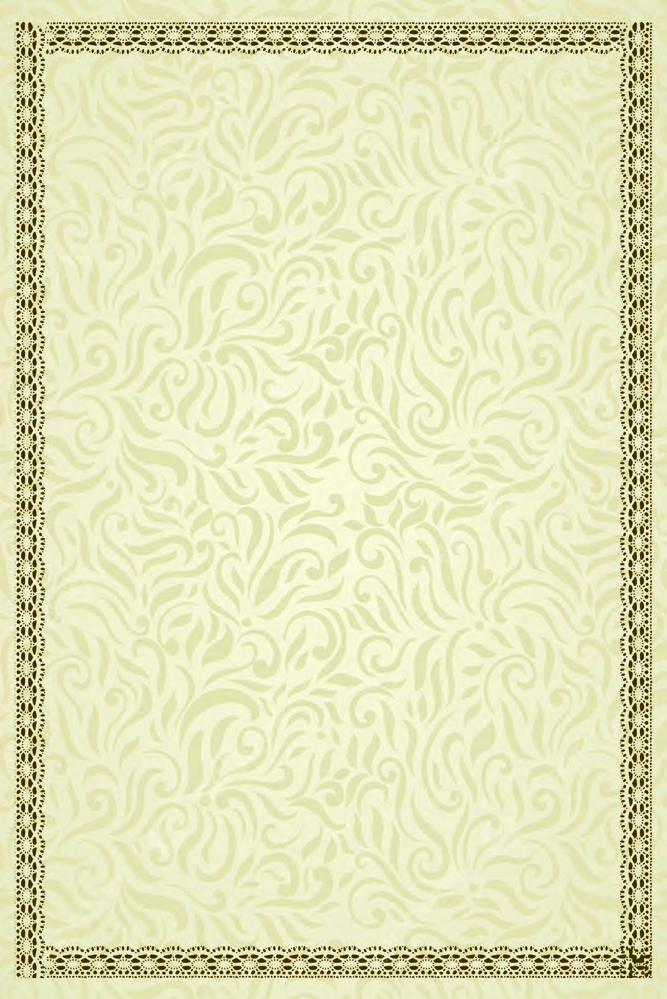<figcaption>Figure fig_ch01_p006_01 (Page 6)</figcaption></figure>
  <div class="page-content">

  </div>
</section>
<section class="page-section" id="page-7">
  <div class="page-header"><span class="page-number">Page 7</span></div>
  <figure class="diagram-card" id="fig_ch01_p007_01"><figcaption>Figure fig_ch01_p007_01 (Page 7)</figcaption></figure>
  <div class="page-content">
    <p>¢šsś¡ź¡†s›Æ<br>gŦDZmų‚§pŽŒ›NJŠ—–ǴŽ–cǗšŽĹ›¡ź†š}š§f„›ŒsšcŒ‚Æ¡Ú<br>ˆ“›„žŽ¢„”ā‘›Æ†›ųcg“›¢}Ú§“¡ųśƂšÕ‚z†“›‹šuā‘cˆ›Æ<br>ښĹ§ ˆ vĞā‘›š› ˆ “’›s‘›ž¡} gųšĞ›Æ “¡ųŝsc –—<br>Ǟšƒā‘š›g“›¡}zœ“›Úsc¡xƪe†“…›šŒ†•DZ–Œž—āÇ“’›<br>Œš§ Œ¡ǮšŽ ŽšzDZŝc sššÄ s’›šĹ h –šcǗšŽ›s £““›…DZc g“›¡}<br>Žžˆ¡ƀĞ‚§‹š•¢“•‹ž•š„›sÇfxšŽāÇf¢vš•āÇ“›”Ǵš–ƂŒšāÇ<br>Օ› mų›ā¡† †›Ž“…› Žcuā‘›Æ h £““›…DZc Ƃs}Œš§ gŦDZ›¡<br>h –šcǗšŽ›s £““›…DZś†ˆ›ų›Æ †ƣ¡} ŽšzDZś¡ź ‹žƂՂ› £““›<br>…DZś†§uDZŒšˆÿĬ§“}ڝ‹šuŧ“Ä¢sšĞ¢ˆš¡ŽšzDZś¡źe‚›Žš›<br>†›¡sšǫų iŎˆÅ“‚¢Œt e‚›†§ ¡‚šĞ¡‚Úš› ‰‹ž›ǐ“c “›”š<br>“Œš–Œ‚Ƃ¢„”cˆ}›Ěš§ŒŽƂ¢„”cŒ…DZ‹šuŧe‚›“›”šŒšˆœ~‹žŒ›<br>s›’ڝcˆ}›Ěšc‹šuā‘›Æ–„œÅvŒš‚œŽ¢„”āÇ„Ǵœˆ–Œž—āÇg“¡š<br>¡Ú¢ăÅų‚š§ gŦDZ¡} ‹žƂՂ› mųˆ¢ƠšÇ h £““›…DZc mŅŒšŅ<br>Œ¡Ĭų§†›āÇÚ§¢Šš…DZŒš›¢Ƽ.‹žƂՂ››¡h£““›…DZ“cŽšzDZś¡ź<br>–“›¢”•ŒšǙš†“cg“›¡}ŒÃ–žÃsšš“Ǚe†‹“¡ƀ}ų‚›†§sšŽ<br>Œš›ĹœÅų›ĞĬ§ g¡‚š¡Ú¢ăÅų§ †žǮšĬs‘š› gŦDZ›¡ Օ› z†zœ“›‚c<br>mų›“ ⌡ƀ}Ĺ››Ž›Úų £““›…DZāÇ n¡¡Ĭÿ›c e‚›†›}›c<br>ns‚Ǵś¡ź pŽ ¢†ÅĹ †ž¡sšĬ§ h †š}›¡†c z†ā¡‘c pų›ƀ›<br>ڝųv}sā‘ŒĬ§gŎcsšŽDZā¡‘Ƽšc†šcg“›¡}xÅă¡xƭųĬ§<br>‹žƂՂ›–“›¢”•‚s‘¡} e}›Ǚš†Ĺ›Æ gŦDZ¡ ‚š¡’ ˆc“›…c ‚Žc<br>‚›Ž›Úšc<br>1. iŎˆÅ“‚¢Œt<br>2. iĹ¢ŽŦDZÄ–Œ‚c<br>3. iˆ„Ǵœˆœˆœ~‹žŒ›<br>4. gŦDZÄŒŽ‹žŒ›<br>5. ‚œŽ–Œ‚ā‘c„Ǵœˆs‘c<br>1</p>
  </div>
</section>
<section class="page-section" id="page-8">
  <div class="page-header"><span class="page-number">Page 8</span></div>
  <figure class="diagram-card" id="fig_ch01_p008_01"><figcaption>Figure fig_ch01_p008_01 (Page 8)</figcaption></figure>
  <figure class="diagram-card" id="fig_ch01_p008_02">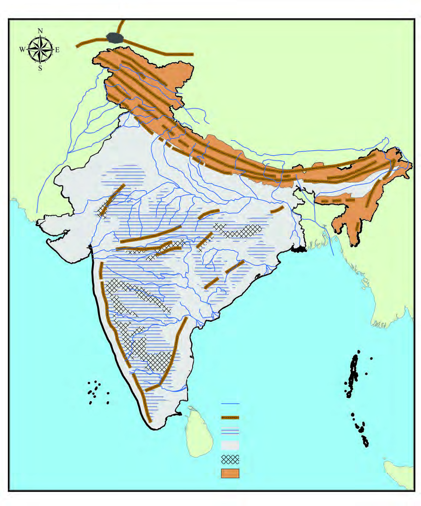<figcaption>Figure fig_ch01_p008_02 (Page 8)</figcaption></figure>
  <div class="page-content">
    <p>8<br>–šŒž—Dz”šȼc--<br>‹šuc-<br>x›Ņc 1.1<br>sšŽ¢Úšc<br>sšŽ¢Úšc<br>—›ŭÚ•§<br>—›ŭÚ•§<br>ˆšŒœÅˆÅ“‚¡ÚЧ<br>ˆšŒœÅˆÅ“‚¡ÚЧ<br>sÄÄ<br>sÄÄ<br>eŠ›Ú}Æ<br>eŠ›Ú}Æ<br>ä„ǵœˆ§<br>ä„ǵœˆ§<br>ˆ}›ĚšÄ‚œŽ–Œ‚c<br>ˆ}›ĚšÄ‚œŽ–Œ‚c<br>s› ’ Ú Ä<br>s› ’ Ú Ä<br>‚œ Ž – Œ ‚ c<br>‚œ Ž – Œ ‚ c<br>fźŒšÄ<br>fźŒšÄ<br>†›¢ÚšŠšÅ„ǵœˆ–Œž—c<br>†›¢ÚšŠšÅ„ǵœˆ–Œž—c<br>ŠcušÇ<br>ŠcušÇ<br>iÇÚ}Æ<br>iÇÚ}Æ<br>ˆžÅ“vĞc<br>ˆžÅ“vĞc<br>uš¢Žš<br>uš¢Žš<br>tš–›<br>tš–›<br>zŦ›<br>zŦ›<br>ˆ}§sš›Šc<br>ˆ}§sš›Šc<br>Œ›¢–š<br>Œ›¢–š<br>–šw§¢ˆš<br>–šw§¢ˆš<br>}›šÄ•šÄ<br>}›šÄ•šÄ<br>šÚ§†›ŽsÇ<br>šÚ§†›ŽsÇ<br>––§Úņ›ŽsÇ<br>––§Úņ›ŽsÇ<br>iŎˆÅ“‚¢Œt<br>iŎˆÅ“‚¢Œt<br>iĹ¢ŽŦDzÄ–Œ‚c<br>iĹ¢ŽŦDzÄ–Œ‚c<br>iˆ„ǵœˆœ<br>iˆ„ǵœˆœ<br>ˆœ~‹žŒ›<br>ˆœ~‹žŒ›<br>eŽš“›<br>eŽš“›<br>ƒšÅŒŽ‹žŒ›<br>ƒšÅŒŽ‹žŒ›<br>–‚§ˆŽ<br>–‚§ˆŽ<br>Œ—š„›¢š<br>Œ—š„›¢š<br>£ŒÚ<br>£ŒÚ<br>£sŒžÅsųsÇ<br>£sŒžÅsųsÇ<br>Žšz§Œ—Æ<br>Žšz§Œ—Æ<br>sųsÇ<br>sųsÇ<br>“›ŰDz<br>“›ŰDz<br>†šušÚųsÇ<br>†šušÚųsÇ<br>†„›sÇ<br>ˆÅ“‚†›ŽsÇ<br>300-600ŒœǯÅ<br>0-300ŒœǯÅ<br>600-900ŒœǯÅ<br>900Œœǯ›†§Œs‘›Æ<br>–žx›s<br>gŦDz‹­‚›s‹žˆ}c<br>gŦDz‹­‚›s‹žˆ}c<br>ˆDž›ŒvĞc<br>ˆDž›ŒvĞc<br>MAP NOT TO SCALE</p>
  </div>
</section>
<section class="page-section" id="page-9">
  <div class="page-header"><span class="page-number">Page 9</span></div>
  <figure class="diagram-card" id="fig_ch01_p009_01"><figcaption>Figure fig_ch01_p009_01 (Page 9)</figcaption></figure>
  <figure class="diagram-card" id="fig_ch01_p009_03"><figcaption>Figure fig_ch01_p009_03 (Page 9)</figcaption></figure>
  <figure class="diagram-card" id="fig_ch01_p009_04">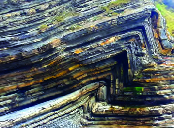<figcaption>Figure fig_ch01_p009_04 (Page 9)</figcaption></figure>
  <figure class="diagram-card" id="fig_ch01_p009_05"><figcaption>Figure fig_ch01_p009_05 (Page 9)</figcaption></figure>
  <figure class="diagram-card" id="fig_ch01_p009_06"><figcaption>Figure fig_ch01_p009_06 (Page 9)</figcaption></figure>
  <figure class="diagram-card" id="fig_ch01_p009_08"><figcaption>Figure fig_ch01_p009_08 (Page 9)</figcaption></figure>
  <figure class="diagram-card" id="fig_ch01_p009_09"><figcaption>Figure fig_ch01_p009_09 (Page 9)</figcaption></figure>
  <figure class="diagram-card" id="fig_ch01_p009_10"><figcaption>Figure fig_ch01_p009_10 (Page 9)</figcaption></figure>
  <figure class="diagram-card" id="fig_ch01_p009_11"><figcaption>Figure fig_ch01_p009_11 (Page 9)</figcaption></figure>
  <div class="page-content">
    <p>9<br>ǢšÄ¢Å§-&lt;<br>¢šsś¡ź¡†s›Æ<br>Í¢šsś¡ź ¢ŒÆڞŽÎ mų›¡ƀ}ų ˆšŒœÅ ˆÅ“‚¡ÚĞ›Æ<br>†›ųci„§‹“›ă§s›’Ú§ˆžÅ“šxÆ“¡Ž “DZšˆ›Úų†›Ž“…›ˆÅ“‚<br>†›ŽsÇ¢xÅų‚š§gŦDZÄiˆ‹žtįś¡ź“}Ú§“}ڝs›’ÚÄ<br>e‚›ŽšiŎˆÅ“‚¢Œt<br>‚šŽ‚¢ŒDZ† Ƃšc<br>sĚ‚c iŽ<br>¢Œ›‚Œš§hˆÅ“‚†›ŽsÇ”›š<br>ˆš‘›sÇÚ§ “†c –c‹“›ă§ Žžˆ¡ƀĞ<br>Œ}ڝˆÅ“‚ā‘š›“ˆ}›Ěš§–›Ű<br>†„› Œ‚Æ s›’Ú§ ƖǥˆŅ†„› “¡Ž<br>ns¢„”c 2400 s›¢šŒœǮņœ‘Ĺ›Æ“DZšˆ›ă<br>s›}ڝųiŎˆÅ“‚¢ŒtƩ§150 Œ‚Æ<br>400 s›¢šŒœǮÅ“¡Ž “œ‚›Ĭ§iŽ¢Œ›<br>¡sš}Œ}›s‘c—›Œš†›s‘c ‚šȺŽs‘c<br>†›Ě–“›¢”•Œš‹žƂ¢„”Œš›‚§<br>‹žƂՂ›–“›¢”•‚s‘¡} e}›Ǚš†<br>śÆ iŎˆÅ“‚¢Œt¡ Œžųš›<br>‚›Ž›Úǰ<br>1. ğšÄ–§—›Œšc<br>2. —›Œšc<br>3. s›’ÚÄsųsÇ<br>†Æs››Ğǫ‹žˆ}c (x›Ņc 1.1) ˆŽ›¢”š…›ă§iŎˆÅ“‚¢Œt¡}<br>Ǚš†c Œ†Ǡ›šÚžˆšŒœÅˆÅ“‚¡ÚЛƆ›ųci„§‹“›ÚųŒǮ§<br>ˆÅ“‚†›Žs¢‘¡‚š¡Ú¡ų§s¡ĬśˆĞ›s¡ƀ}Ĺž<br>z sÄÄ<br>z<br>Œ}ڝˆÅ“‚āÇ<br>(Fold Mountains)<br>‹ž“ÆÚś¡<br>”›šˆš‘›sÇ –ƣń<br>ŠĹšÆŒ}ā› Œ}ڝˆÅ“‚āÇŽžˆ<br>¡ƀ}šĬ§ “†c<br>(Folding) mų h<br>Ƃ⛍›ž¡}š§ Œ}ڝˆÅ“‚āÇ<br>Žžˆ¡ƀ}ų‚§  —›Œšc fƈ§–§<br>‚}ā› ˆÅ“‚†›ŽsÇ gŎśÆ<br>Žžˆ¡ƀĞ“š§<br>–Œŝ†›Žƀ›Æ†›ųc ”Žš”Ž›900 ŒœǮ›†Œs‘›ÆiŽŒǫ‹žŽžˆ<br>āÇ ¡ˆš‚¡“<br>ˆÅ“‚āÇ mųš§ e›¡ƀ}ų‚§ ‹žˆ}c<br>(x›Ņc<br>1.1) “›”s†c ¡xƪ§ gŦDZ›¡ Ƃ…š† ˆÅ“‚†›ŽsÇ<br>s¡Ĭśm¡ź‹žˆ}¢”tŽĹ›Æ(My Own Atlas)iÇ¡ƀ}Ĺž</p>
  </div>
</section>
<section class="page-section" id="page-10">
  <div class="page-header"><span class="page-number">Page 10</span></div>
  <figure class="diagram-card" id="fig_ch01_p010_01"><figcaption>Figure fig_ch01_p010_01 (Page 10)</figcaption></figure>
  <figure class="diagram-card" id="fig_ch01_p010_02"><figcaption>Figure fig_ch01_p010_02 (Page 10)</figcaption></figure>
  <figure class="diagram-card" id="fig_ch01_p010_03">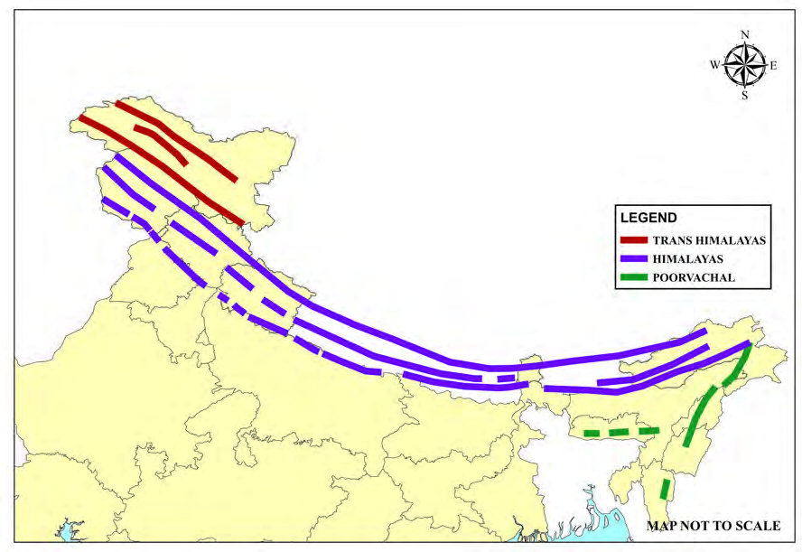<figcaption>Figure fig_ch01_p010_03 (Page 10)</figcaption></figure>
  <figure class="diagram-card" id="fig_ch01_p010_05"><figcaption>Figure fig_ch01_p010_05 (Page 10)</figcaption></figure>
  <figure class="diagram-card" id="fig_ch01_p010_06"><figcaption>Figure fig_ch01_p010_06 (Page 10)</figcaption></figure>
  <figure class="diagram-card" id="fig_ch01_p010_07"><figcaption>Figure fig_ch01_p010_07 (Page 10)</figcaption></figure>
  <div class="page-content">
    <p>10<br>–šŒž—Dz”šȼc--<br>‹šuc-<br>iŎˆÅ“‚¢Œt›Æ iÇ¡ƀ}ų Ƃ…š† ˆÅ“‚†›Žs‘c e“<br>¡}Ǚš†“c Œ†Ǡ›šÚ›¢Ƽš<br>g‚›Æ nǮ“c “}ڝsš¡ƀ}ų ğšÄ–§—›Œšc }›ŠǮÄ<br>—›Œšc mųc e›¡ƀ}ų ”Žš”Ž› 3000 ŒœǮÅ iŽŒǫ<br>ğšÄ–§ —›ŒšĹ›†§ ns¢„”c 40<br>s›¢šŒœǮÅ “œ‚›c 965<br>s›¢šŒœǮņœ‘“ŒĬ§sšŽ¢Úšc†›Ž—›ŒšˆÅ“‚¡ĹˆšŒœÅ<br>ˆÅ“‚¡ÚНŒš›ŠŰ›ƀ›Úų<br>x›Ņc1.2<br>—›ŒšˆÅ“‚†›ŽsÇ<br>—›ŒšˆÅ“‚†›ŽsÇ<br>‹žƂՂ›“›‹šuāÇ<br>‹žƂՂ›“›‹šuāÇ<br>sšŽ¢Úšc<br>sšŽ¢Úšc<br>––§Úņ›ŽsÇ<br>––§Úņ›ŽsÇ<br>—›Œšŝ›<br>—›Œšŝ›<br>—›ŒšxÆ<br>—›ŒšxÆ<br>–›“š›s§<br>–›“š›s§<br>šÚ§†›ŽsÇ<br>šÚ§†›ŽsÇ<br>šÚ§<br>šÚ§<br>zƣsšNJœÅ<br>zƣsšNJœÅ<br>—›ŒšxÆ<br>—›ŒšxÆ<br>Ƃ¢„”§<br>Ƃ¢„”§<br>ˆĕšŠ§<br>ˆĕšŠ§<br>iŎštį§<br>iŎštį§<br>—Ž›š†<br>—Ž›š†<br>Ɨ›<br>Ɨ›<br>ŽšzǚšÄ<br>ŽšzǚšÄ<br>uzšĹ§<br>uzšĹ§<br>Œ…DzƂ¢„”§<br>Œ…DzƂ¢„”§<br>yŜ–§u€§<br>yŜ–§u€§p›•<br>p›•<br>{šÅtį§<br>{šÅtį§<br>Šœ—šÅ<br>Šœ—šÅ<br>e–c<br>e–c<br>Œ›ƀžÅ<br>Œ›ƀžÅ<br>Ņ›ˆŽ<br>Ņ›ˆŽ<br>Œ›¢ǡššc<br>Œ›¢ǡššc<br>†šuššÄ§<br>†šuššÄ§<br>–›Ú›c<br>–›Ú›c<br>eŽšxÆƂ¢„”§<br>eŽšxÆƂ¢„”§<br>ˆDž›ŒŠcušÇ<br>ˆDž›ŒŠcušÇ<br>iĹÅƂ¢„”§<br>iĹÅƂ¢„”§<br>uš¢Žš<br>uš¢Žš<br>tš–›<br>tš–›<br>zŦ›<br>zŦ›<br>ˆ}§sš›Šc<br>ˆ}§sš›Šc<br>†šušÚųsÇ<br>†šušÚųsÇ<br>Œ›¢–š<br>Œ›¢–š<br>—›Œšc<br>s›’ÚÄsųsÇ<br>ğšÄ–§—›Œšc<br>–žx›s<br>¢Œvš<br>¢Œvš<br>Œ—šŽšȹ<br>Œ—šŽšȹ<br>iŎˆÅ“‚¢Œt›¡<br>Œžų“›‹šuā‘›Æ<br>iÇ¡ƀ}ų<br>ˆÅ“‚<br>†›ŽsÇ n¡‚Ƽš¡Œų§ ‹žˆ}c (x›Ņc 1.2) †›Žœä›ăs¡Ĭś ˆĞ›s<br>ˆžÅśšÚž‹žˆ}ś¡ź–žx›sg‚›†š› Ƃ¢šz†¡ƀ}ĹŒ¢Ƽš<br>ğšÄ–§—›Œšc<br>—›Œšc<br>s›’ÚÄsųsÇ<br>z sšŽ¢Úšc<br>z<br>z —›Œšŝ›<br>z<br>z †šušÚųsÇ<br>z</p>
  </div>
</section>
<section class="page-section" id="page-11">
  <div class="page-header"><span class="page-number">Page 11</span></div>
  <figure class="diagram-card" id="fig_ch01_p011_01"><figcaption>Figure fig_ch01_p011_01 (Page 11)</figcaption></figure>
  <figure class="diagram-card" id="fig_ch01_p011_02"><figcaption>Figure fig_ch01_p011_02 (Page 11)</figcaption></figure>
  <figure class="diagram-card" id="fig_ch01_p011_03"><figcaption>Figure fig_ch01_p011_03 (Page 11)</figcaption></figure>
  <figure class="diagram-card" id="fig_ch01_p011_04"><figcaption>Figure fig_ch01_p011_04 (Page 11)</figcaption></figure>
  <figure class="diagram-card" id="fig_ch01_p011_05"><figcaption>Figure fig_ch01_p011_05 (Page 11)</figcaption></figure>
  <figure class="diagram-card" id="fig_ch01_p011_06"><figcaption>Figure fig_ch01_p011_06 (Page 11)</figcaption></figure>
  <figure class="diagram-card" id="fig_ch01_p011_08"><figcaption>Figure fig_ch01_p011_08 (Page 11)</figcaption></figure>
  <figure class="diagram-card" id="fig_ch01_p011_09"><figcaption>Figure fig_ch01_p011_09 (Page 11)</figcaption></figure>
  <figure class="diagram-card" id="fig_ch01_p011_10">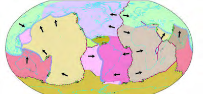<figcaption>Figure fig_ch01_p011_10 (Page 11)</figcaption></figure>
  <figure class="diagram-card" id="fig_ch01_p011_12"><figcaption>Figure fig_ch01_p011_12 (Page 11)</figcaption></figure>
  <figure class="diagram-card" id="fig_ch01_p011_13"><figcaption>Figure fig_ch01_p011_13 (Page 11)</figcaption></figure>
  <figure class="diagram-card" id="fig_ch01_p011_14"><figcaption>Figure fig_ch01_p011_14 (Page 11)</figcaption></figure>
  <div class="page-content">
    <p>11<br>ǢšÄ¢Å§-&lt;<br>¢šsś¡ź¡†s›Æ<br>ğšÄ–§—›ŒšĹ›†§¡‚Úš›s›’¢ÚšĞ§ “DZšˆ›ÚųŒžų§ –ŒšŦŽ<br>ˆÅ“‚†›ŽsÇsĬ›¢Ƽ. —›Œšŝ›—›ŒšxÆ–›“š›s§mų›“š§<br>h –ŒšŦŽˆÅ“‚†›ŽsÇ g“ Œžųc ¢xÅų‚š§ —›Œšc<br>—›Œš†›Žs‘›ÆnǮ“c¡‚Úšǫ‚cucuš–Œ‚Ĺ›†§e‚›<br>Žš›†›¡sšǫų‚Œš–›“š›s§†›ŽƩ§ns¢„”c60Œ‚Æ150<br>s›¢šŒœǮÅ “¡Ž “œ‚›Ĭ§ —›ŒšĹ›¡ź nǮ“c ˆ¡Œǫ<br>‹šuŒš‚›†šÆ h †›Ž¡ rĞŗ›Œšc (Outer Himalaya) mųc<br>“›‘›Úų<br>–›“š›Ú›†§“}ښ›–Œŝ†›Žƀ›Æ†›ųc 3500Œ‚Æ4500ŒœǮÅ<br>“¡Ž”Žš”Ž›iŽŒǫˆÅ“‚†›Žš§—›ŒšxƐǠŗ›Œšc<br>mųce›¡ƀ}ųh†›ŽƩ§ns¢„”c60Œ‚Æ80s›¢šŒœǮÅ<br>“¡Ž“œ‚›Ĭ§<br>¢÷Ǯŗ›Œšcgųŗ›Œšc mųœ<br>¢ˆŽs‘›Æsž}›e›¡ƀ}ų—›Œšŝ›<br>–Œŝ†›Žƀ›Æ †›ųc ns¢„”c 6100<br>ŒœǮ›†Œs‘›Æ iŽŒǫ ˆÅ“‚†›Ž<br>š§ ns¢„”c 25 s›¢šŒœǮÅ f§<br>g‚›¡ź“œ‚›ŒĚŒž}¡ƀЈœ‚ā<br>‘š›“¢šsś¡iŽ¢Œ›Œ›Ú<br>¡sš}Œ}›s‘c sš¡ƀ}ų‚§ h<br>†›Ž›š§<br>—›ŒšĹ›¡źˆ›“›<br>¢šsś¡ iŽ¢Œ› ˆÅ“‚†›Ž<br>s‘›¡šųš—›Œšcgųc“‘Åų<br>¡sšĬ›Ž›Úsš¡ų§<br>†›āÇڏ›<br>š¢Œš? mŦ¡sšĬš›Ž›Úc?<br>‹žˆ}c (x›Ņc 1.2) †›Žœä›ă§ —›Œšŝ› —›ŒšxÆ –›“š›s§ mųœ<br>†›Žs‘¡}Ǚš†cs¡Ĭśe“Ǚ›‚›¡xƭų–cǙš†āÇ<br>ˆĞ›s¡ƀ}Ĺž<br>”›šŒį‰sāÇ<br>(Tectonic Plates)<br>‹ž“Æړc Œšź››¡ź ŒsNjšu“c ¢xÅų<br>‚š§ ”›šŒįc ”›šŒįc ¡x‚c<br>“‚Œš sǑā‘šš§ †›¡sšǫų‚§<br>e¢†sš›Žcs›¢šŒœǮÅ“›ɀ‚›cns¢„”c<br>100s›¢šŒœǮÅ“¡Žs†“Œǫh”›šŒį<br>‹šuā¡‘š§ ”›šŒį‰sāÇ mų§<br>“›‘›Úų‚§g““ÄsŽ‹šuciǡښǫų¢‚š<br>s}Æŏ‹šuc iǡښǫų¢‚š “ÄsŽc<br>s}Æŏciǡښǫų¢‚šfsšc</p>
  </div>
</section>
<section class="page-section" id="page-12">
  <div class="page-header"><span class="page-number">Page 12</span></div>
  <figure class="diagram-card" id="fig_ch01_p012_01"><figcaption>Figure fig_ch01_p012_01 (Page 12)</figcaption></figure>
  <figure class="diagram-card" id="fig_ch01_p012_02"><figcaption>Figure fig_ch01_p012_02 (Page 12)</figcaption></figure>
  <figure class="diagram-card" id="fig_ch01_p012_03"><figcaption>Figure fig_ch01_p012_03 (Page 12)</figcaption></figure>
  <figure class="diagram-card" id="fig_ch01_p012_05">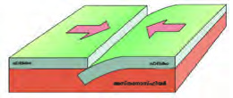<figcaption>Figure fig_ch01_p012_05 (Page 12)</figcaption></figure>
  <figure class="diagram-card" id="fig_ch01_p012_06">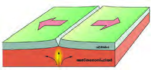<figcaption>Figure fig_ch01_p012_06 (Page 12)</figcaption></figure>
  <figure class="diagram-card" id="fig_ch01_p012_07">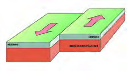<figcaption>Figure fig_ch01_p012_07 (Page 12)</figcaption></figure>
  <figure class="diagram-card" id="fig_ch01_p012_08"><figcaption>Figure fig_ch01_p012_08 (Page 12)</figcaption></figure>
  <figure class="diagram-card" id="fig_ch01_p012_09">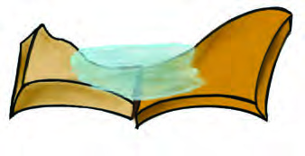<figcaption>Figure fig_ch01_p012_09 (Page 12)</figcaption></figure>
  <figure class="diagram-card" id="fig_ch01_p012_10"><figcaption>Figure fig_ch01_p012_10 (Page 12)</figcaption></figure>
  <figure class="diagram-card" id="fig_ch01_p012_11">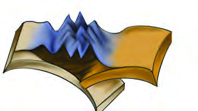<figcaption>Figure fig_ch01_p012_11 (Page 12)</figcaption></figure>
  <figure class="diagram-card" id="fig_ch01_p012_12">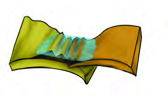<figcaption>Figure fig_ch01_p012_12 (Page 12)</figcaption></figure>
  <div class="page-content">
    <p>12<br>–šŒž—Dz”šȼc--<br>‹šuc-<br>x›ŅcE
<br>x›ŅcF
<br>x›ŅcG
<br>–c¢šzs–œŒ<br>Convergent Margin<br>‰sāÇ‚ƣ›Æe}Úų<br>e‚›ŽsÇ<br>“›¢šzs–œŒ<br>Divergent Margin<br>‰sāÇ‚ƣ›Æesų<br>e‚›ŽsÇ<br>¢y„s–œŒ<br>Transform Margin<br>‰sāÇ‚›ŽDŽœ†Œš›<br>iŽ–›Œšųe‚›ŽsÇ<br>‹­Œ”›šˆš‘›s‘¡} x†c (Plate Tectonics) f§ g‚›†sšŽc<br>“ÄsŽc–Œŝ‹šu“c¢xÅų”›šˆš‘›s‘š§¡}¢Üš›s§‰s<br>āÇ (Tectonic Plates) ”›šŒįĹ›†§ ‚š¡’ iÅų‚šˆĹšÆ<br>”›sÇ iŽs› eŅŝ“š“Ǚ›Æ †›¡sšǫų ‹šuŒš§<br>eǘ¢†šǝ›Åeǘ¢†šǝ››†Œs‘›ž¡} ¡}¢Üš›s§‰s<br>āÇ–š“…š†cx›ă¡sšĬ›Ž›Úų<br>‰sx†cŒžc‰se‚›Žs‘›ÆˆÅ“‚ŽžˆœsŽc¢ˆšǫ<br>‹­ŒƂ“ÅņāÇ –zœ“Œš§ Œžų‚Žc ‰s e‚›Žs‘š<br>ǫ‚§ –c¢šzs–œŒ “›¢šzs–œŒ ¢y„s–œŒ mų›“<br>š“<br>–c¢šzs–œŒs‘›Æ ”›šŒį‰<br>sā‘¡}<br>–ƣń‰Œš› ”›šˆš‘›<br>sÇÚ§“†c (Folding) –c‹“›ÚšĬ§<br>g‚ŒžcŽžˆ¡ƀ}ųˆÅ“‚†›Žs‘š§<br>Œ}ڝˆÅ“‚āÇ(Fold Mountains).<br>ns¢„”c150-160„”äc“Å•āÇڝ<br>ŒƠ§iˆ„ǴœˆœgŦDZcf¢Ȼ›Ä<br>“ÄsŽc iÇ¡ƀ}ų gŦDZÄ ‰s<br>ś¡źǙš†c„䛁šÅ…¢uš‘Ĺ›š<br>›Žų ˆ›ųœ}§ g‚§ “}¢ÚšĞ†œā›<br>ž¢•DZÄ ‰sś†}Ĺ“ų¢ƀšÇ<br>h<br>ŽĬ‰sā‘¡}c<br>g}›Æ<br>†›¡sšĬ›Žų ¡}ƒ›–§ –Œŝś¡ź<br>e}›ĹЧŒ}ā›iÅų“ŽšÄ‚}ā›<br>(x›Ņc 1.4)eā¡†š§—›ŒšˆÅ<br>“‚cŽžˆc¡sšĬ‚§<br>x›Ņc 1.4<br>—›ŒšˆÅ“‚ŽžˆœsŽc<br>¡}ƒ›–§<br>¡}ƒ›–§<br>—›Œšc<br>—›Œšc<br>g<br>ŦDz<br>Ä<br>‰<br><br>s<br>c<br>g<br>ŦDz<br>Ä<br>‰<br><br>s<br>c<br>g<br>ŦDz<br>Ä<br>‰<br><br>s<br>c<br>g<br>ŦDz<br>Ä<br>‰<br><br>s<br>c<br>g<br>ŦDz<br>Ä<br>‰<br><br>s<br>c<br>g<br>ŦDz<br>Ä<br>‰<br><br>s<br>c<br>x›Ņc 1.3 (a)<br>x›Ņc1.3 (b)<br>x›Ņc1.3 (c)<br>ž<br>ž<br>¢<br>•<br>DzÄ<br><br>‰<br><br>s<br>c<br>¢<br>•<br>DzÄ<br>‰<br><br>s<br>c<br>ž<br>ž<br>¢<br>•<br>DzÄ<br><br>‰<br><br>s<br>c<br>¢<br>•<br>DzÄ<br>‰<br><br>s<br>c<br>ž<br>ž<br>¢<br>•<br>DzÄ<br><br>‰<br><br>s<br>c<br>¢<br>•<br>DzÄ<br>‰<br><br>s<br>c</p>
  </div>
</section>
<section class="page-section" id="page-13">
  <div class="page-header"><span class="page-number">Page 13</span></div>
  <figure class="diagram-card" id="fig_ch01_p013_01"><figcaption>Figure fig_ch01_p013_01 (Page 13)</figcaption></figure>
  <figure class="diagram-card" id="fig_ch01_p013_02"><figcaption>Figure fig_ch01_p013_02 (Page 13)</figcaption></figure>
  <figure class="diagram-card" id="fig_ch01_p013_03">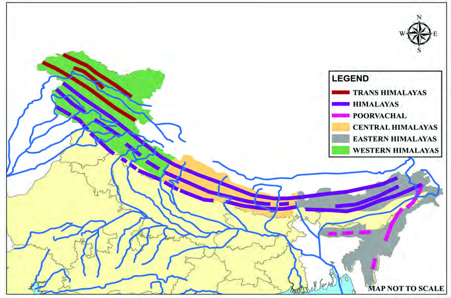<figcaption>Figure fig_ch01_p013_03 (Page 13)</figcaption></figure>
  <figure class="diagram-card" id="fig_ch01_p013_04"><figcaption>Figure fig_ch01_p013_04 (Page 13)</figcaption></figure>
  <figure class="diagram-card" id="fig_ch01_p013_05"><figcaption>Figure fig_ch01_p013_05 (Page 13)</figcaption></figure>
  <figure class="diagram-card" id="fig_ch01_p013_06"><figcaption>Figure fig_ch01_p013_06 (Page 13)</figcaption></figure>
  <figure class="diagram-card" id="fig_ch01_p013_07"><figcaption>Figure fig_ch01_p013_07 (Page 13)</figcaption></figure>
  <figure class="diagram-card" id="fig_ch01_p013_09"><figcaption>Figure fig_ch01_p013_09 (Page 13)</figcaption></figure>
  <figure class="diagram-card" id="fig_ch01_p013_10"><figcaption>Figure fig_ch01_p013_10 (Page 13)</figcaption></figure>
  <figure class="diagram-card" id="fig_ch01_p013_11"><figcaption>Figure fig_ch01_p013_11 (Page 13)</figcaption></figure>
  <div class="page-content">
    <p>13<br>ǢšÄ¢Å§-&lt;<br>¢šsś¡ź¡†s›Æ<br>f’¢Œ›‚c ¡xÿĹš “”ā¢‘š}<br>sž}›‚Œš‚šȺŽs‘š§u›Ž›sŭŽāÇ<br>(Gorges).<br>–›Ű ucu –‚§z§ ‚}ā› †„›sÇ<br>eˆŽ„†(Erosion) śž¡}—›ŒšˆÅ“‚<br>†›ŽƩ§s¡su›Ž›sŭŽāÇǔǏ›Úų<br>u›Ž›sŭŽāÇ(Gorges)<br>—›ŒšˆÅ“‚cŽžˆc¡sšĬ›Ğǫ‚§n‚‚Žc‰sš‚›Ž›š§?<br>x›Ņc1.5<br>—›Œš†›ŽƩ§s¡sǬpŽu›Ž›sŭŽc<br>—›Œš“cƂš¢„”›s<br>“›‹šuā‘c<br>—›ŒšĹ›Æ†›ųci„§‹“›Úų<br>†„›sÇ ˆÅ“‚†›ŽsÇڝs¡s<br>f’¢Œ› ‚šȺŽsÇ (u›Ž›sŭŽ<br>āÇ  Gorges) †›ÅŒ›ă¡sš¡Ĭš’<br>sų ˆÅ“‚†›ŽsÇÚ§ s¡s<br>p’sų †„›s¡‘ e}›Ǚš†¡ƀ}<br>śš§ —›Œš¡Ĺ Ƃš¢„”›s<br>“›‹šuā‘š›¢“Å‚›Ž›Úų‚§g“<br>n¡‚Ƽš¡Œų§ ¢†šÚž<br>1.<br>ˆ}›ĚšÄ—›Œšc<br>2. Œ…DZ—›Œšc<br>3.<br>s›’ÚÄ—›Œšc<br>x›Ņc 1.6<br>x›Ņc 1.6<br>Œ…DzƂ¢„”§<br>Œ…DzƂ¢„”§<br>Œ—šŽšȹ<br>Œ—šŽšȹ<br>yŜ–§u€§<br>yŜ–§u€§<br>p›•<br>p›•<br>Œ›¢ǡšDZ<br>Œ›¢ǡšDZ<br>ˆDž›ŒŠcušÇ<br>ˆDž›ŒŠcušÇ<br>—›ŒšˆÅ“‚†›ŽsÇ<br>—›ŒšˆÅ“‚†›ŽsÇ<br>Ƃš¢„”›s“›‹šuāÇ<br>Ƃš¢„”›s“›‹šuāÇ<br>sšŽ¢Úšc<br>sšŽ¢Úšc<br>––§Úņ›ŽsÇ<br>––§Úņ›ŽsÇ<br>—›Œšŝ›<br>—›Œšŝ›<br>—›ŒšxÆ<br>—›ŒšxÆ<br>–›“š›s§<br>–›“š›s§<br>šÚ§†›ŽsÇ<br>šÚ§ †›ŽsÇ<br>šÚ§<br>šÚ§<br>zƣsšNJœÅ<br>zƣsšNJœÅ<br>—›ŒšxÆ<br>—›ŒšxÆ<br>Ƃ¢„”§<br>Ƃ¢„”§<br>ˆĕšŠ§<br>ˆĕšŠ§<br>{c†„›<br>{c†„›<br>x›†šŠ§†„›<br>x›†šŠ§†„›<br>Ž“›†„›<br>Ž“›†„›<br>›†„›<br>›†„›<br>–‚§z§†„›<br>–‚§z§†„›<br>xƠƆ„›<br>xƠƆ„›<br>Œš—›†„›<br>Œš—›†„›<br>–›Ű†„›<br>–›Ű†„›<br>–›Ű§†„›<br>–›Ű§†„›<br>¢Š‚ǵ†„›<br>¢Š‚ǵ†„›<br>¡sĆ„›<br>¡sĆ„›<br>¢–šÃ†„›<br>¢–šÃ†„›<br>ucuš†„›<br>ucuš†„›<br>ƖǦˆŅ<br>ƖǦˆŅ<br>uįs§†„›<br>uįs§†„›<br>Œ††„›<br>Œ††„›<br>sš‘›†„›<br>sš‘›†„›<br>¢sš–›†„›<br>¢sš–›†„›<br>iŎštį§<br>iŎštį§<br>—Ž›š†<br>—Ž›š†<br>Ɨ›<br>Ɨ›<br>ŽšzǚšÄ<br>ŽšzǚšÄ<br>uzšĹ§<br>uzšĹ§<br>{šÅtį§<br>{šÅtį§<br>Šœ—šÅ<br>Šœ—šÅ<br>e–c<br>e–c<br>Œ›ƀžÅ<br>Œ›ƀžÅ<br>Ņ›ˆŽ<br>Ņ›ˆŽ<br>–›Ú›c<br>–›Ú›c<br>eŽšxÆƂ¢„”§<br>eŽšxÆƂ¢„”§<br>iĹÅƂ¢„”§<br>iĹÅƂ¢„”§<br>uš¢Žš<br>uš¢Žštš–›<br>tš–›<br>zŦ›<br>zŦ›<br>ˆ}§sš›Šc<br>ˆ}§sš›Šc<br>†šušÚųsÇ<br>†šušÚųsÇ<br>Œ›¢–š<br>Œ›¢–š<br>–žx›s<br>ğšÄ–§—›Œšc<br>—›Œšc<br>s›’ÚÄsųsÇ<br>Œ…Dz—›Œšc<br>s›’ÚÄ—›Œšc<br>ˆ}›ĚšÄ—›Œšc<br>¢Œvš<br>¢Œvš<br>–šw§¢ˆš<br>–šw§¢ˆš<br>†šuššÄ§<br>†šuššÄ§<br>}œǙ†„›<br>}œǙ†„›<br>Š›š–§†„›<br>Š›š–§†„›</p>
  </div>
</section>
<section class="page-section" id="page-14">
  <div class="page-header"><span class="page-number">Page 14</span></div>
  <figure class="diagram-card" id="fig_ch01_p014_01"><figcaption>Figure fig_ch01_p014_01 (Page 14)</figcaption></figure>
  <figure class="diagram-card" id="fig_ch01_p014_02"><figcaption>Figure fig_ch01_p014_02 (Page 14)</figcaption></figure>
  <figure class="diagram-card" id="fig_ch01_p014_04"><figcaption>Figure fig_ch01_p014_04 (Page 14)</figcaption></figure>
  <figure class="diagram-card" id="fig_ch01_p014_05"><figcaption>Figure fig_ch01_p014_05 (Page 14)</figcaption></figure>
  <figure class="diagram-card" id="fig_ch01_p014_06"><figcaption>Figure fig_ch01_p014_06 (Page 14)</figcaption></figure>
  <figure class="diagram-card" id="fig_ch01_p014_07"><figcaption>Figure fig_ch01_p014_07 (Page 14)</figcaption></figure>
  <figure class="diagram-card" id="fig_ch01_p014_08"><figcaption>Figure fig_ch01_p014_08 (Page 14)</figcaption></figure>
  <figure class="diagram-card" id="fig_ch01_p014_09"><figcaption>Figure fig_ch01_p014_09 (Page 14)</figcaption></figure>
  <figure class="diagram-card" id="fig_ch01_p014_10"><figcaption>Figure fig_ch01_p014_10 (Page 14)</figcaption></figure>
  <div class="page-content">
    <p>14<br>–šŒž—Dz”šȼc--<br>‹šuc-<br>—›Œš¢Œt<br>¢“Å‚›Ž›Úų †„›sÇ<br>z ˆ}›ĚšÄ—›Œšc<br>zŒ…DZ—›Œšc<br>zs›’ÚÄ—›Œšc<br>z –›Űsš‘›<br>zsš‘›}œǘ<br>z}œǘƖǥˆŅ<br>zƣsšljœŽ›¡ź “}Ú§ –›Ű†„œ<br>‚šȺŽ Œ‚Æ iŎštį›¡ź<br>s›’Ú§ sš‘œ†„œ (všvŽ†„›¡}<br>¢ˆš•s†„›) ‚šȺŽ“¡ŽiÇ¡ƀ}ų<br>ˆ}›ĚšÄ —›Œš¡Ĺ sšljœÅ<br>—›Œšc—›ŒšxÆ—›ŒšciĹ<br>Žštį§—›Œšcmų›ā¡†Œžų§<br>¢Œts‘š›‚›Ž›Úšc<br>sšNJœÅ—›Œšc<br>zƣsšljœÅ šÚ§<br>Ƃ¢„”ŧ<br>ns¢„”c<br>3.5<br>äc<br>x‚ŽNJ<br>s›¢šŒœǮÅ “›ɀ‚››Æ “DZšˆ›ă§ s›}ڝų sšljœÅ —›ŒšĹ›†§<br>ns¢„”c700 s›¢šŒœǮņœ‘“c500s›¢šŒœǮÅ“œ‚›ŒĬ§<br>ŒĚŒž}›¡sš}Œ}›s‘c‚šȺŽs‘cŒ†›Žs‘c†›ĚsšljœÅ<br>—›ŒšĹ›¡ Ƃ…š† ˆÅ“‚†›Žs‘š§ sšŽ¢Úšc –ǗÅ<br>šÚ§ˆœÅˆĕšÆmų›“<br>¢šsś¡ ŽĬšŒ¡Ĺ iŽ¢Œ› ¡sš}Œ}›š Œ­Ĭ§K2 <br>(Godwin Austin-8611m) sšŽ¢Úšc†›Ž›š§Ǚ›‚›¡xƭų‚§<br>x›Ņc 1.7 <br>Œ­Ĭ§ K2<br>—›ŒšĹ›¡źŒžų§Ƃš¢„”›s¢Œts‘ce“¡ ¢“Å‚›Ž›Úų<br>†„›s‘Œš§x“¡}†Æs››ĞǫˆĞ›s›ÆiÇ¡ƀ}Ĺ››Ğǫ‚§<br>‹žˆ}c(x›Ņc 1.6) †›Žœä›ă§Œžų§Ƃš¢„”›s¢Œts‘ce“¡ ¢“Å‚›<br>Ž›Úų†„›s‘¡}Ǚš†“cs¡ĬśgŦDZ¡}‹žˆ}Žžˆ¢Žt›Æ<br>“Žă ¢xÅڞ<br>—<br>†<br>‹</p>
  </div>
</section>
<section class="page-section" id="page-15">
  <div class="page-header"><span class="page-number">Page 15</span></div>
  <figure class="diagram-card" id="fig_ch01_p015_01"><figcaption>Figure fig_ch01_p015_01 (Page 15)</figcaption></figure>
  <figure class="diagram-card" id="fig_ch01_p015_02"><figcaption>Figure fig_ch01_p015_02 (Page 15)</figcaption></figure>
  <figure class="diagram-card" id="fig_ch01_p015_03"><figcaption>Figure fig_ch01_p015_03 (Page 15)</figcaption></figure>
  <figure class="diagram-card" id="fig_ch01_p015_05"><figcaption>Figure fig_ch01_p015_05 (Page 15)</figcaption></figure>
  <figure class="diagram-card" id="fig_ch01_p015_06"><figcaption>Figure fig_ch01_p015_06 (Page 15)</figcaption></figure>
  <figure class="diagram-card" id="fig_ch01_p015_07"><figcaption>Figure fig_ch01_p015_07 (Page 15)</figcaption></figure>
  <figure class="diagram-card" id="fig_ch01_p015_08"><figcaption>Figure fig_ch01_p015_08 (Page 15)</figcaption></figure>
  <figure class="diagram-card" id="fig_ch01_p015_10"><figcaption>Figure fig_ch01_p015_10 (Page 15)</figcaption></figure>
  <figure class="diagram-card" id="fig_ch01_p015_11"><figcaption>Figure fig_ch01_p015_11 (Page 15)</figcaption></figure>
  <figure class="diagram-card" id="fig_ch01_p015_12"><figcaption>Figure fig_ch01_p015_12 (Page 15)</figcaption></figure>
  <figure class="diagram-card" id="fig_ch01_p015_13"><figcaption>Figure fig_ch01_p015_13 (Page 15)</figcaption></figure>
  <figure class="diagram-card" id="fig_ch01_p015_15"><figcaption>Figure fig_ch01_p015_15 (Page 15)</figcaption></figure>
  <div class="page-content">
    <p>15<br>ǢšÄ¢Å§-&lt;<br>¢šsś¡ź¡†s›Æ<br>–›šă›Ä ¢ŠšÆ¢}š¢Žš ‚}ā›“<br>hƂ¢„”¡ĹƂ…š†—›Œš†›s‘š§<br>–›Ű†„››c e‚›¡ź ¢ˆš•s†„›s<br>‘š Ž“› {c x›†šŠ§ ‚}ā›“<br>›c“Å•c Œ’“Ä–ƜŗŒš †œ¡Žš<br>’Ú§–š…DZŒšÚų‚§h—›Œš†›s‘š§<br>ˆÅ“‚ā‘¡}gŽ“”ā¡‘c‚ƣ›Æ<br>ŠŰ›ƀ›ă§ u‚šu‚c<br>–š…DZŒšÚų‚§<br>ˆÅ“‚ā‘›¡ xŽā‘š§ (Passes).<br>ˆÅ“‚†›ŽsÇŒ›ăs}ښÄ–—šs<br>Œš –Ǵš‹š“›s g}ā‘š§ xŽāÇ<br>ˆœÅˆĕšÆ ˆÅ“‚†›ŽƩ§ s¡sǫ<br>Š†›—šÆ xŽŒš§ zƣƂ¢„”¡Ĺ<br>sšljœÅ‚šȺŽŒš›ŠŰ›ƀ›Úų‚§<br>”ŗz‚}šsāÇ<br>…šŽš‘Œǫ<br>sš”§ŒœÅ<br>—›ŒšĹ›¡<br>pŽ<br>Ƃ…š†‚}šsŒš§„šÆh‚}šs<br>ś¡źsŽ›š§NJœ†uňЁc<br>Ǚ›‚›¡xƭų‚§ sšljœŽ›¡ pŽ<br>Ƃ…š†<br>“›¢†š„–ĕšŽ“š›zDZ<br>¢sůc<br>sž}›š›‚§ „šÆ‚}šs<br>ś¡ ”›sšŽ ¢‚š›s‘c ¢ƌšĞ›cu§<br>ŒšÅÚǮs‘c (¢‚š›s‘›¡ “›ˆ<br>›sÇ) sšljœÅ}ž›–Ĺ›¡źŒt<br>Œŝs‘š§<br>x›Ņc1.8<br>„šÆ‚}šsś¡pŽ”›sšŽ¢‚š›<br>¢šsś¡nǮ“ciŽĹ›ÆǙ›‚›<br>¡xƭųŗ‹žŒ›mųš§–›šă›Ä<br>—›Œš†›¡“›¢”•›ƀ›Úų‚§<br>–›šă›Ä—›Œš†›<br>—›ŒšĹ›¡ Ƃ…š† xŽāÇ pŽ eǮ§–›¡ź –—š¢Ĺš¡}<br>s¡Ĭśm¡ź ‹žˆ}¢”tŽĹ›Æ (My Own Atlas)iÇ¡ƀ}Ĺž<br>—›ŒšÄ†„›sÇ “Å•c Œ’“Ä z–ƜŗŒš›Ž›ÚšÄ sšŽ<br>¡ŒŦš›Ž›Úc?</p>
  </div>
</section>
<section class="page-section" id="page-16">
  <div class="page-header"><span class="page-number">Page 16</span></div>
  <figure class="diagram-card" id="fig_ch01_p016_01"><figcaption>Figure fig_ch01_p016_01 (Page 16)</figcaption></figure>
  <figure class="diagram-card" id="fig_ch01_p016_02"><figcaption>Figure fig_ch01_p016_02 (Page 16)</figcaption></figure>
  <figure class="diagram-card" id="fig_ch01_p016_03"><figcaption>Figure fig_ch01_p016_03 (Page 16)</figcaption></figure>
  <figure class="diagram-card" id="fig_ch01_p016_04"><figcaption>Figure fig_ch01_p016_04 (Page 16)</figcaption></figure>
  <figure class="diagram-card" id="fig_ch01_p016_05">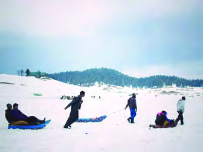<figcaption>Figure fig_ch01_p016_05 (Page 16)</figcaption></figure>
  <div class="page-content">
    <p>16<br>–šŒž—Dz”šȼc--<br>‹šuc-<br>ˆÅ“‚㎛“s‘›Æ¢“†Æښā‘›ÆŽžˆ¡ƀ}ųˆÆ¢Œ}s‘š§<br>&#x27;ŒÅusÇ&#x27;£”‚DZsšā‘›ÆŒĚŒž}¡ƀ}ųŒÅusÇǗœ›cu§<br>(Skiing) ¢ˆšǫ ŒĚsš “›¢†š„āÇښ› …šŽš‘c –ĕšŽ›<br>s¡‘ fsŕ›Úų ¢–šÃŒÅu§ uÆŒÅu§ mų›“ g“›Æ<br>x›‚š§<br>—›ŒšxÆ—›Œšc<br>Ƃ…š†Œšc —›ŒšxÆƂ¢„”§ –cǙš†c iÇ¡ƀ}ų —›Œš<br>‹šuŒš§—›ŒšxÆ—›ŒšchˆÅ“‚Ƃ¢„”¡ĹƂ…š††„›<br>s‘š§x›†šŠ§Ž“›Š›š–§mų›“<br>h Ƃ¢„”¡Ĺ ˆÅ“‚†›Žs‘š§ …­‘š…Å ˆœÅˆĕšÆ mų›“<br>ˆÅ“‚‹šuā‘›Æe¢†sc”ŗz‚}šsāÇsššcxů‚šÆ<br>–žŽz§‚šÆ mų›“ g“›Æ x›‚š§ —›ŒšxÆƂ¢„”›¡†<br>šÚŒš›ŠŰ›ƀ›ÚųŠšŽšăššxŽ“cs‘‚šȺŽ¡<br>š—žÆ ǜ›‚› mųœ ‚šȺŽs‘Œš› ŠŰ›ƀ›Úų ¢š—§‚šw§<br>xŽ“Œš§—›ŒšxÆ—›ŒšĹ›¡Ƃ…š†xŽāÇ<br>x›Ņc1.10<br>xů‚šÆ‚}šsc<br>x›Ņc 1.11 <br>¢š—§‚šw§xŽc<br>uÆŒÅu§<br>¢“†Æښc<br>ŒĚsšc<br>x›Ņc 1.9 (a)<br>x›Ņc 1.9 (b)</p>
  </div>
</section>
<section class="page-section" id="page-17">
  <div class="page-header"><span class="page-number">Page 17</span></div>
  <figure class="diagram-card" id="fig_ch01_p017_01"><figcaption>Figure fig_ch01_p017_01 (Page 17)</figcaption></figure>
  <figure class="diagram-card" id="fig_ch01_p017_02"><figcaption>Figure fig_ch01_p017_02 (Page 17)</figcaption></figure>
  <figure class="diagram-card" id="fig_ch01_p017_03"><figcaption>Figure fig_ch01_p017_03 (Page 17)</figcaption></figure>
  <figure class="diagram-card" id="fig_ch01_p017_04"><figcaption>Figure fig_ch01_p017_04 (Page 17)</figcaption></figure>
  <figure class="diagram-card" id="fig_ch01_p017_06"><figcaption>Figure fig_ch01_p017_06 (Page 17)</figcaption></figure>
  <figure class="diagram-card" id="fig_ch01_p017_07"><figcaption>Figure fig_ch01_p017_07 (Page 17)</figcaption></figure>
  <figure class="diagram-card" id="fig_ch01_p017_08"><figcaption>Figure fig_ch01_p017_08 (Page 17)</figcaption></figure>
  <figure class="diagram-card" id="fig_ch01_p017_09"><figcaption>Figure fig_ch01_p017_09 (Page 17)</figcaption></figure>
  <div class="page-content">
    <p>17<br>ǢšÄ¢Å§-&lt;<br>¢šsś¡ź¡†s›Æ<br>s‘sc÷š—žÆ‚}ā›Œ¢†š<br>—ŽŒš‚šȺŽs‘c–t“š–¢sů<br>ā‘š •›c Œš› mų›“c<br>“›¢†š„–ĕšŽ›s¡‘ fsŕ›Úų<br>g}ā‘š§£”‚DZ“cŒĚ“œ’§xc<br>e†‹“¡ƀ}ųhƂ¢„”ā‘›Æˆ<br>›}ā‘›š›x}†œŽ“sÇsš<br>¡ƀ}ųĬ§<br>x›Ņc 1.12<br>s‘‚š’§“Ž<br>iŎštį§—›Œšc<br>–‚§z§†„›Œ‚Æsš‘œ†„›“¡Ž<br>ǫ —›ŒšƂ¢„”Œš§ iĹ<br>Žštį§—›Œšcg‚›¡źˆ}›<br>̚‹šuc u€§“šÇ —›Œšc<br>mųc s›’Úċšuc sŒ“žÃ<br>—›Œšcmųce›¡ƀ}ų<br>†ŭš¢„“›sš¡ŒǮ§Š„Žœ†šƒ§¢s„šÅ<br>†šƒ§ ‚}ā› iŽ¢Œ› ¡sš}<br>Œ}›sÇ iŎštį§ —›Œš<br>śÆǙ›‚›¡xƭų<br>ucuŒ†mųœ†„›s‘¡}i„§‹“Ǚš†Œšuc¢ušŅ›Œ¢†šŅ›<br>‚}ā› —›Œš†›s‘c £††›‚šÆ ‹œc‚šÆ ‚}ā› ”ŗz<br>‚}šsā‘ch¢Œt›Ĭ§<br>x›Ņc1.13<br>£††›‚šÆ‚}šsc<br>x}†œŽ“sÇŽžˆ¡ƀ}ų¡‚ā¡†?<br>Œ’¡“ǫc ‹žŒ›Ú}››¢Ú§ jÅų›ā› ‹žuŋzĹ›¡ź ‹šuŒšsų ˆÅ“‚ŽžˆœsŽc<br>¢ˆšǫ‹­ŒƂ“ÅņāÇ–zœ“Œšg}ā‘›Æ‹­¢ŒšˆŽ›‚Ĺ›†}››¡”›šˆš‘›sÇ<br>xž}ˆ›}›Úsch”›sÇ‹žuŋz¡Ĺ xž}šÚsc¡xƭųgā¡† xž}ˆ›}›ă<br>‹žuŋzc ‹­¢ŒšˆŽ›‚Ĺ›Æ i“s‘š¡Ĺų‚š§ x}†œŽ“sÇ —›ŒšˆÅ“‚<br>‹šuā‘›Æ …šŽš‘c x}†œŽ“sÇ sššc i„š †Ɩ‚šȺŽ Œ›sŽÃ tœÅucu<br>x}†œŽ“s‘›Æ†›ųŒǫ‹­Œ‚š¢ˆšÅzc(Geothermal Energy)iˆ¢šu›ă§£“„DZ‚›iƈš„›<br>ƀ›Ú“šÄ–š…›Úc—›ŒšxÆƂ¢„”›¡Œ›sŽÃx}†œŽ“›Æ†›ųcgŎśÆ<br>£“„DZ‚›iƈš„›ƀ›ÚųĬ§<br>Žc<br>ST-205-2-SOC.SCI-II (M)-9-VOL-1</p>
  </div>
</section>
<section class="page-section" id="page-18">
  <div class="page-header"><span class="page-number">Page 18</span></div>
  <figure class="diagram-card" id="fig_ch01_p018_01"><figcaption>Figure fig_ch01_p018_01 (Page 18)</figcaption></figure>
  <figure class="diagram-card" id="fig_ch01_p018_02"><figcaption>Figure fig_ch01_p018_02 (Page 18)</figcaption></figure>
  <figure class="diagram-card" id="fig_ch01_p018_03"><figcaption>Figure fig_ch01_p018_03 (Page 18)</figcaption></figure>
  <figure class="diagram-card" id="fig_ch01_p018_04"><figcaption>Figure fig_ch01_p018_04 (Page 18)</figcaption></figure>
  <figure class="diagram-card" id="fig_ch01_p018_05"><figcaption>Figure fig_ch01_p018_05 (Page 18)</figcaption></figure>
  <figure class="diagram-card" id="fig_ch01_p018_06"><figcaption>Figure fig_ch01_p018_06 (Page 18)</figcaption></figure>
  <figure class="diagram-card" id="fig_ch01_p018_07">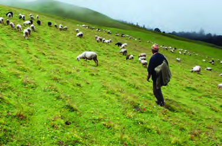<figcaption>Figure fig_ch01_p018_07 (Page 18)</figcaption></figure>
  <figure class="diagram-card" id="fig_ch01_p018_08"><figcaption>Figure fig_ch01_p018_08 (Page 18)</figcaption></figure>
  <div class="page-content">
    <p>18<br>–šŒž—Dz”šȼc--<br>‹šuc-<br>ŠuDzšcfĞ›}ŶšŽc<br>—›ŒšĹ›Æ ns¢„”c 3000 Œ‚Æ 4500<br>ŒœǮÅ iŽĹ›†›}›Æ (ƽ䢎tƩc —›Œ<br>¢ŽtƩŒ›}›Æ) sš¡ƀ}ų ˆÆ¢Œ}sÇ<br>u€§“šÇ¢Œt›ÆŠuDZšÆmų§e›<br>¡ƀ}ų<br>£”‚DZsšā‘›Æ ŒĚŒž}ų ŠuDZš<br>sÇŒĚŽsų¢‚š¡}ˆăˆ‚ă§ˆÆ¢Œ}<br>s‘š›Œšųhe“–Žā‘›Æ‚šȺšŽ<br>ā‘›Æ†›ųc fĞ›}ŶšÅ “‘ÅŝƜuā‘<br>Œš› ŠuDZšs‘›¡Ĺų ‚šȺšŽāÇ<br>“ŽĬāų ¢“†ÆښĹ§ –ƜŗŒš<br>ˆăƀǫ ŠuDZšs‘›Æ g“Å ‚šÆښ›s ˆšÅƀ›}ā¡‘šŽÚ› “‘ÅŝƜuā¢‘š<br>¡}šƀc“–›ÚųŒĚsššŽc‹¢Ĺš¡}Œ›ā›e}Ĺ–œ–Ó¡Ž‚šȺšŽā‘›Æ<br>“–›Úų“‘ÅŝƜuā¢‘š¡}šƀc‚šȺšŽā‘›¢Úc‚›Ž›¡sˆÅ“‚ā‘›¡ˆÆ<br>¢Œ}s‘›¢ÚŒǫ g}ŶšŽ¡} sš›s¢„”š}†¡Ĺ ğšÄ–§—DZžŒÄ–§ (Transhumance) <br>mų§“›‘›Úų<br>x›Ņc 1.14 <br>u€§“šÇ¢Œt›¡pŽŠuDzšÆ<br>¡Ǡŗ›ŒšĹ›†c–›“š›s§Œ†›ŽsÇڝŒ›}›Æsš¡ƀ<br>}ų†›Žƀš‚šȺŽs‘š§„žsÇ(Duns). iŎštį§–cǙš<br>†Ĺ›¡¢„Žš„žÃ (Dehradun)  g‚›ÆƂ–›ŗŒš§<br>g“›}ā‘›¡ iÅų ˆÅ“‚㎛“s‘›Æ sš¡ƀ}ų ¢“†Æ<br>ښˆÆ¢Œ}s‘š§ &#x27;ŠuDZšÆ&#x27;£”‚DZsšĹ§ŒĚ›†}››š<br>sųŠuDZšsLj›}ā‘›c“›¢†š„–ĕšŽĹ›†š›Ƃ¢š<br>z†¡ƀ}Ĺų<br>i„š„šŽšŠuDZšÆ¢ušÅ¢–šÃŠuDZšÆ<br>x›Ņc1.15 <br>}œǙ†„›<br>Œ…Dz—›Œšc<br>sš‘œ†„› Œ‚Æ }œǘ†„› “¡Žǫ<br>—›ŒšƂ¢„”Œš§<br>Œ…DZ—›Œšc<br>¢†ƀšÇ —›Œšc mųc e›¡ƀ<br>}ųh¢Œt¡}‹žŽ›‹šu“c¢†ƀš<br>‘›š§ Œ…DZ—›ŒšĹ›¡ź ˆ}›Ěš<br>Ä –›Ú›c šÅz››cu§ Ƃ¢„”āÇ<br>ŒšŅŒš§gŦDZ›Ç¡ƀ}ų‚§<br>¢šsś¡nǮ“ciŽcsž}›¡sš}<br>Œ}›š<br>Œ­Ĭ§<br>m“ǡ§ <br>(Mount <br>Everest) <br>¢†ƀš‘›š§<br>sšĕÄ<br>zcuˆÅ“‚“cgŦDZ£x†e‚›Åś›ÆǙ›‚›¡xƭų†šƒš<br>xŽ“chƂ¢„”ŧǙ›‚›¡xƭų</p>
  </div>
</section>
<section class="page-section" id="page-19">
  <div class="page-header"><span class="page-number">Page 19</span></div>
  <figure class="diagram-card" id="fig_ch01_p019_01"><figcaption>Figure fig_ch01_p019_01 (Page 19)</figcaption></figure>
  <figure class="diagram-card" id="fig_ch01_p019_02"><figcaption>Figure fig_ch01_p019_02 (Page 19)</figcaption></figure>
  <figure class="diagram-card" id="fig_ch01_p019_03"><figcaption>Figure fig_ch01_p019_03 (Page 19)</figcaption></figure>
  <figure class="diagram-card" id="fig_ch01_p019_04"><figcaption>Figure fig_ch01_p019_04 (Page 19)</figcaption></figure>
  <figure class="diagram-card" id="fig_ch01_p019_05"><figcaption>Figure fig_ch01_p019_05 (Page 19)</figcaption></figure>
  <figure class="diagram-card" id="fig_ch01_p019_06"><figcaption>Figure fig_ch01_p019_06 (Page 19)</figcaption></figure>
  <div class="page-content">
    <p>19<br>ǢšÄ¢Å§-&lt;<br>¢šsś¡ź¡†s›Æ<br>x›Ņc1.16<br>¢Ššc›šxŽc<br>s‚›¡ăš’sų }œǘ†„›c e‚›¡ź †„œ‚œŽĹНs‘c –›Ú›c<br>—›ŒšĹ›¡ź–“›¢”•‚s‘š§<br>h Ƃ¢„”Ĺ›¡ź ‹žŒ›”šȻˆŽŒš e†sž–š—xŽDZāÇ ‚›Ž›<br>㏛Ě Ɩ›Ğœ•sšÅ ¡sš¢‘š›Æ sšĹ‚¡ų g“›}ā‘›Æ<br>¢‚›Û•› fŽc‹›ă šÅz››cu§ ¢‚› eŦšŽšȸ‚Ĺ›Æ<br>n¡Ƃ–›ŗŒš§<br>s›’ÚÄ—›Œšc<br>ˆ}›ĚšÄ —›Œš¡Ĺ e¢ˆä›ă§<br>iŽcsĚ Œ†›Žs‘š s›’ÚÄ<br>—›Œšc}œǘ†„›Œ‚Æs›’Ú§Ɩǥ<br>ˆŅ †„› “¡Ž sš¡ƀ}ų e–c<br>—›Œšc mųc e›¡ƀ}ų h<br>¢Œt›¡ Ƃ…š† ¡sš}Œ}›š§<br>†căŠÅ“(7756 M)<br>ƖǥˆŅsš¡Œw§¢š—›‚§–ŠÄ<br>–›Ž›mų›“š§Ƃ…š††„›sÇ<br>eŽšxÆƂ¢„”›¡†}›ŠǮ›¡š–Œš›ŠŰ›ƀ›Úų¢Ššc<br>›š ŒDZšÄŒŒš› ŠŰ›ƀ›Úų „›‰ ‚}ā›“ Ƃ…š†<br>xŽā‘š§<br>ˆžÅ“šxÆsųsÇ<br>ƖǥˆŅš‚šȺŽƩ§ s›’Ú§ —›Œš<br>ˆÅ“‚c“}ڧˡ‚Ú§„›”›ÆeŽš<br>xÆƂ¢„”§<br>Œ‚Æ<br>Œ›¢–ššc<br>“¡Ž<br>‚šŽ‚¢ŒDZ†<br>iŽcsĚ<br>sųs<br>‘šš§sš¡ƀ}ų‚§–Œŝ†›Žƀ›Æ<br>†›ųc<br>500 Œ‚Æ 3000 ŒœǮÅ “¡Ž<br>iŽŒǫ h sųsÇ ˆžÅ“šxÆ<br>sųsÇmų›¡ƀ}ų<br>ˆ}§sš§Šc †šušsųsÇ Œ›¢–š<br>sųsÇ Œ›ƀžÅsųsÇ mų›“š§ g‚›Æ Ƃ…š†¡ƀĞ“<br>¢šsśÆ nǮ“c sž}‚Æ Œ’ ‹›Úų x›šˆĕ› Œ­–›Äc<br>mųœƂ¢„”ā‘cg“›¡}š§Ǚ›‚›¡xƭų‚§<br>x›Ņc 1.17<br>ˆžÅ“šxÆ¢Œt›¡pŽsų›ÄƂ¢„”c<br>gŦDZ›Æ iÇ¡ƀ}ų Œ…DZ—›ŒšĹ›¡ź ‹šuāÇ ‹žˆ}śÆ<br>(x›Ņc 1.6)†›ųcs¡ĬŞm¡ź‹žˆ}¢”tŽĹ›Æ(My Own Atlas)<br>iÇ¡ƀ}Ĺž</p>
  </div>
</section>
<section class="page-section" id="page-20">
  <div class="page-header"><span class="page-number">Page 20</span></div>
  <figure class="diagram-card" id="fig_ch01_p020_01"><figcaption>Figure fig_ch01_p020_01 (Page 20)</figcaption></figure>
  <figure class="diagram-card" id="fig_ch01_p020_02"><figcaption>Figure fig_ch01_p020_02 (Page 20)</figcaption></figure>
  <figure class="diagram-card" id="fig_ch01_p020_03">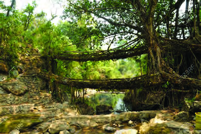<figcaption>Figure fig_ch01_p020_03 (Page 20)</figcaption></figure>
  <figure class="diagram-card" id="fig_ch01_p020_05"><figcaption>Figure fig_ch01_p020_05 (Page 20)</figcaption></figure>
  <figure class="diagram-card" id="fig_ch01_p020_06"><figcaption>Figure fig_ch01_p020_06 (Page 20)</figcaption></figure>
  <figure class="diagram-card" id="fig_ch01_p020_07"><figcaption>Figure fig_ch01_p020_07 (Page 20)</figcaption></figure>
  <figure class="diagram-card" id="fig_ch01_p020_08"><figcaption>Figure fig_ch01_p020_08 (Page 20)</figcaption></figure>
  <div class="page-content">
    <p>20<br>–šŒž—Dz”šȼc--<br>‹šuc-<br>x›Ņc1.18 <br>¢Œvš›¡ ¢“Ž¡sšĬǬˆšc<br>¡s§ŠÇczš¢“šx›Úų ¢„”œ¢š„Dzš†c<br>“}ڝs›’ÚÄgŦDZ›¡nǮ“c“›”ŗz<br>‚}šsŒš¢šs§‚Ú›š§(Œ›ƀžÅ) ¡s§ŠÇ<br>czš¢“š ¢„”œ¢š„DZš†c(Keibul Lamjao National Park).<br>‚}šsśÆ¡ˆšā›Ú›}ڝų––DZš“”›Ǐā‘c<br>ŒĴc ¢xÅų§Žžˆ¡ƀ}ų‚ŽĹs‘š§ˆc}›<br>(Pumdi).<br>––DZā‘c ¡xzœ“›s‘c ˆä›s‘Œ}āų<br>‚†‚§  f“š–“DZ“Ǚš ¢šs§‚s§ ‚}šs<br>ś¡ˆc}›sÇ¢xÅų‚š§¡s§ŠÇczš¢“š<br>¢„”œ¢š„DZš†c‚ĴœÅĹ}–cŽäĹ›†šǫ<br>Žšc–ňЛs›ÆiÇ¡ƀ}ųg}csž}›š›‚§<br>¢šs§‚s§‚}šsś¡ˆc}›sÇ<br>†„›sÇ Œ›ăs}ڝų‚›†š› ŒŽā<br>‘¡}<br>¢“ŽsÇ (Root Bridges) ¢xÅŧ<br>†›Åƣ›Úų ˆšā‘š§ x›Ņc 1.18 Æ<br>sš›ă›Ž›Úų‚§hƂ¢„”¡ĹŒ†<br>•DZÅ ƂՂ›¢š}§ mŅŒšŅc gā›<br>š§ zœ“›Úų‚§ mų‚›¡ź ¢†Å<br>ښ’§xš›‚§<br>sšš“ǚ<br>gŦDZ¡} “}ÚÄ e‚›Žš —›ŒšˆÅ“‚“c ‚}ňœ‚<br>ā‘c ¢xÅų§ gŦDZÄ iˆ‹žtįś†c Œ¢…DZ•DZƩŒ›}›Æ pŽ<br>sšš“Ǚš“›‹šzsc (Climatic divide) ‚œÅڝų —›ŒšˆÅ“‚<br>Ƃ¢„”ā‘›¡ sšš“Ǚ e‚‚§ Ƃ¢„”Ĺ›¡ź iŽĹ›†c<br>‹žƂՂ›Úce†–Ž›ă§ “DZ‚DZš–¡ƀĞ›Ž›Úų<br>‚šŽ‚¢ŒDZ† iŽcsĚ ˆÅ“‚㎛“s‘›c –›“š›s§ Œ}›<br>“šŽā‘›cŒ›¢‚šǑsšš“Ǚš›Ž›ÚcmųšÆiŽcsž}›<br>ˆÅ“‚‹šuā‘›Æ sĚ‚šˆ†›c £”‚DZsšš“ǙŒš›<br>Ž›Úc e†‹“¡ƀ}ų‚§ iÅų ˆÅ“‚‹šuā‘›c šÚ§<br>¢Œt›c š“–Œš†Œš ‚œƿ£”‚DZsšš“Ǚ e†‹“¡ƀ<br>}ų</p>
  </div>
</section>
    </main>
    <footer>
      <div class="nav-bar"><span class="nav-bar disabled"></span><a href="index.html">☰ Index</a><a href="part_1_pages_2140.html">Pages 21-40 →</a></div>
    </footer>
  </div>
</body>
</html>
